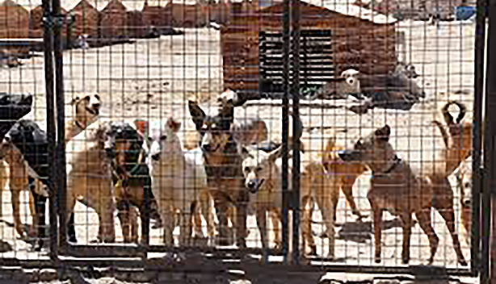
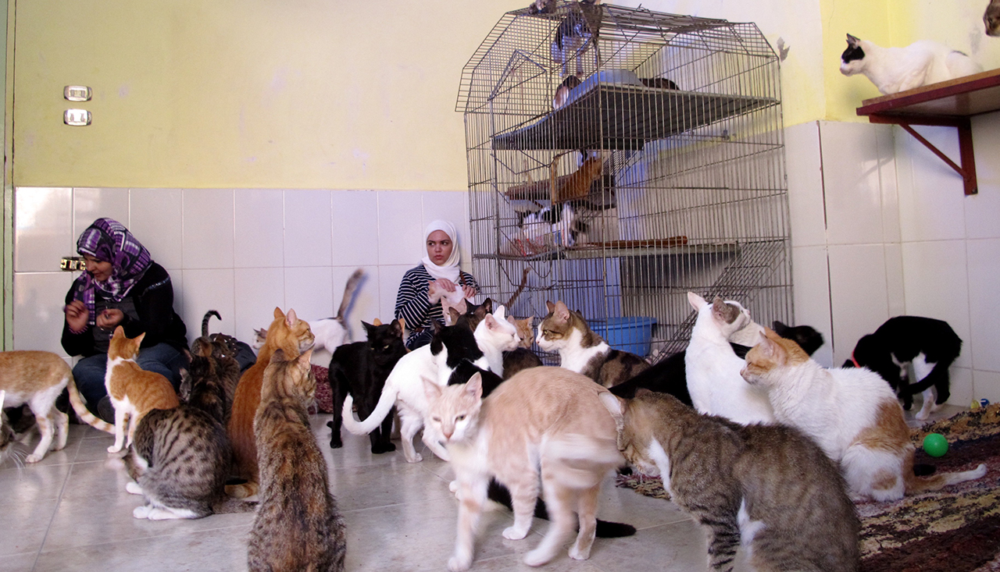
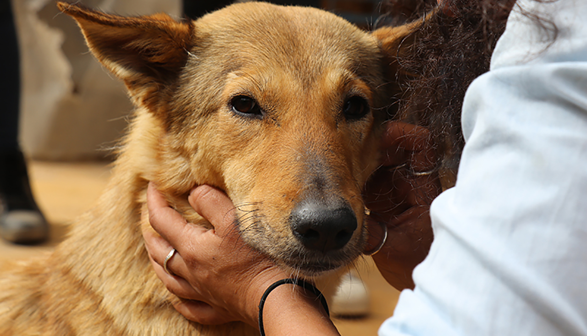
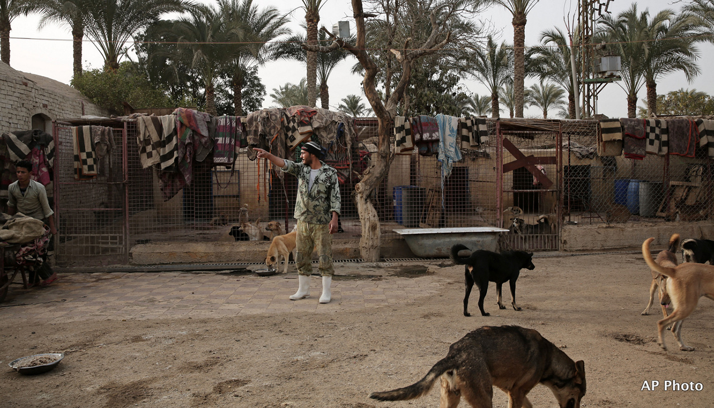
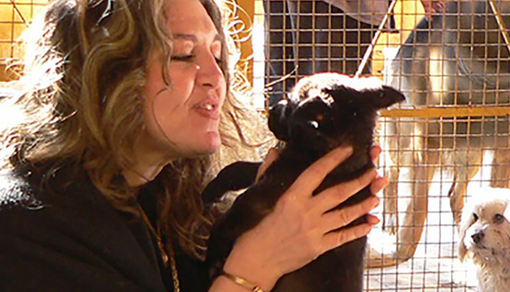
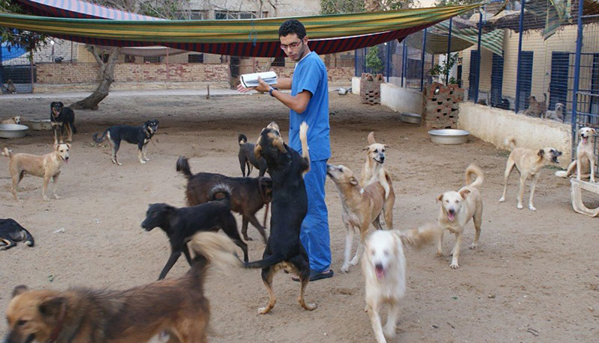
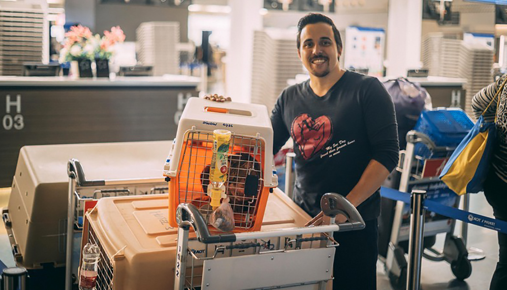

The Egyptian Society for Mercy to Animals (ESMA) is a registered Egyptian NGO (No. 3059/2007) formed in late 2007. ESMA actively works to improve animal welfare in Egypt for all animals, including street dogs and cats, working animals such as donkeys, horses and camels, wildlife, animals in the Cairo zoo, those sold in pet shops and live animal markets, and all animals slaughtered for food. ESMA operates two no-kill shelters and adoption centers in Egypt, and is involved in ongoing campaigns, initiatives, and advocacy activities to promote animal welfare issues in Egypt.
Here are some of the ways we work to improve the conditions for Egypt’s animals:

Animal shelter for cats and dogs:
ESMA currently runs two facilities, a dog shelter in Sakkara, Giza and a cat shelter in Shabramont, Giza that together house over 700 rescued cats and dogs.

Support for the animals of Giza:
The Egyptian revolution began in February 2011, ESMA has been treating starving and sick horses in Nezlet Al-Samman, near the Giza pyramids.

Adoption and Fostering campaigns:
ESMA actively works to find adoptive homes for our animals. The ESMA page on Facebook posts pictures of each rescued animal looking for a loving home.

Policy, advocacy and awareness:
ESMA takes every opportunity to advocate for animals, whether through supporting the enforcement of animal welfare legislation in Egypt, .
SPONSOR
How to become a sponsor
You can help to support our shelter by sponsoring one of our animals until they are adopted, to offset food, medical care, and housing costs. We have more than 1000 animals currently at our shelter. A monthly donation of a minimum of LE 600 (£35, $35, €35), goes a long way in enabling us to provide for them, and there is no limit to the number of animals you can sponsor.


DONATION
Help us make a difference
You can help the animals with your donation! ESMA relies entirely on donations and contributions from its supporters, and the majority of those come from individuals like you! Your contributions provide food, medical care and prepare our animals for their forever home.
BE A FLIGHT PARENT
We are always looking for flight parents to Europe and the USA
Being a flight parent is simple and helps ESMA continue to save more animals. Not only do you re-home animals you transported, you also make shelter room for more. With adoption rates so low in Egypt, it is critical to rescue and place our friends in other parts of the world to give them the lives they deserve. Acting as a flight parent drastically reduces the cost of sending animals on a plane and it ensures they get to their destination safely.
The best part about being a flight parent is you really don’t even have to do anything! Simply contact ESMA before your trip to Cairo, or if you live in Egypt contact us before departing to wherever you’re going, and we will handle everything else.

ADOPTIONS
Our friends are looking for their furever homes.